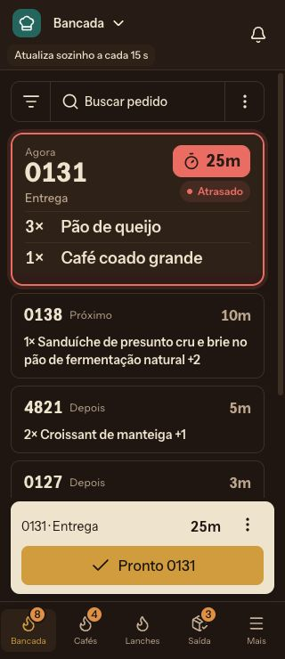
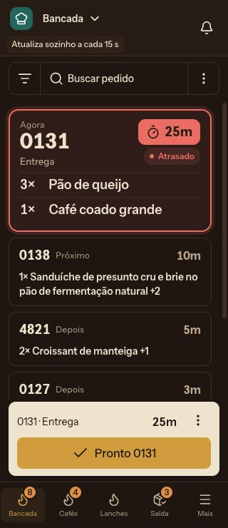
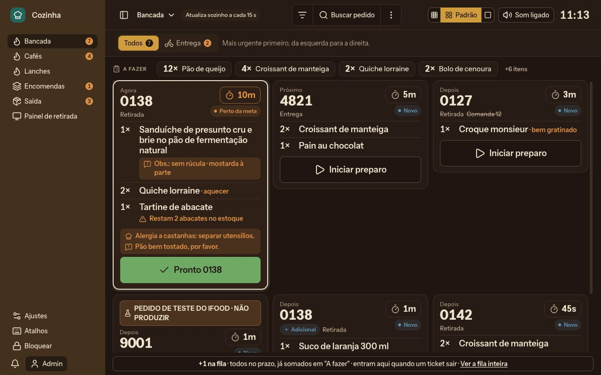

Cozinha: comparar controles e navegação
Conciliação reversa com o KDS Nuxt real e dados fictícios. Cards, notas, alergias e ações operacionais atuais foram preservados. Somente prévias.
Abrir KDS atual para comparação ↗
O que conferir
- Busque 0138 e escolha filtrar nesta tela. Veja termo, quantidade exibida e Limpar. Na opção rolável, role até o controle sair da tela e limpe pelo cabeçalho.
- Escolha um pedido que não esteja atrasado. O contorno do foco fica claro; o atrasado mantém vermelho e “Atrasado” na fila compacta.
- Abra as opções da estação pelo conjunto: Histórico, Atualizar, Som e tamanho. As opções do pedido continuam nos três pontos acima do Pronto.
- Abra o detalhe: código, tempo e fechar ficam na primeira linha; referência, horário e cliente continuam completos, assim como notas e itens.
- Toque em Pronto e depois em Desfazer no prazo nativo. O aviso no topo explica o que ocorre se sair antes do fim.
- Use o ícone da Cozinha para a Central, o nome do posto para trocar estação e Mais para o menu completo. Os atalhos inferiores mantêm posição. No desktop, o controle da lateral oferece Expandida, Compacta e Oculta.
Mais cenários
Para testar erro de Pronto, prepare a falha no simulador e volte ao quadro. O pedido retorna à fila e o aviso fica no topo, com fechar no canto superior direito. A mensagem continua nos destinos simulados se a falha retornar depois de sair.
Capturas da proposta
Mobile: conjunto rolável
Mobile: conjunto no cabeçalho
Desktop com conjunto na linha principal

Limites desta prévia
Central e destinos de outros apps simulam somente a navegação. Não reproduzem suas operações. Login real, PWA entre domínios, SSE, push e som em segundo plano precisam de ensaio próprio. O simulador não comprova regras do Core.
O mesmo estado fictício é compartilhado entre atual e proposta. Restaure os quadros e atualize as telas para comparar estados iguais. O painel público de retirada continua específico para TV.
Fonte fixada em e0c22ba1f. Nenhuma mudança no produto, Core ou backend. Sem merge ou deploy. Preservação dos componentes registrada com hashes e alterações pontuais de apresentação.